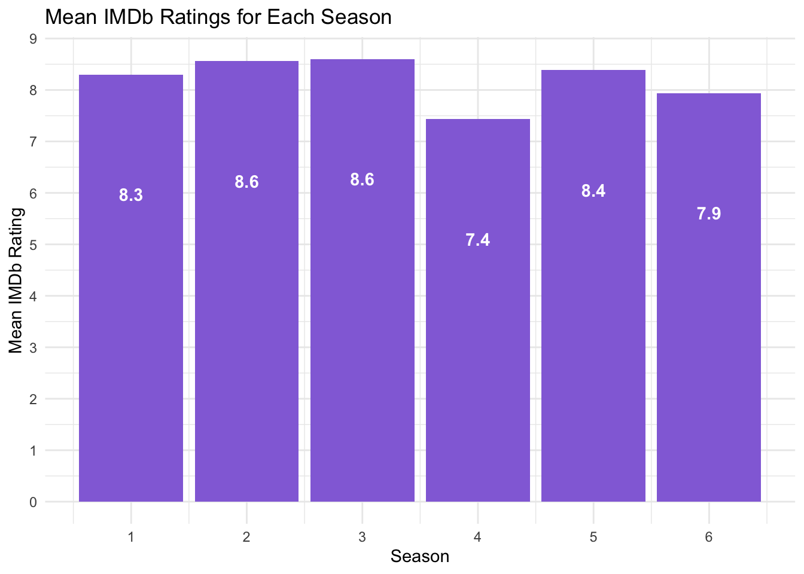

Data Story
NBC’s “Community” Data Analysis
Episode Summaries
Select an episode to learn more about it!
As can be viewed from the episode selection, Community uses the format of a university module name for the title of each episode. This can be argued to increase a feeling of relatability for viewers who have attended / are familiar with such modules. Such episodes also become more interesting and easily recognisable.
IMDb Ratings for Community episodes (all seasons)
This is a scatterplot showing the IMDB ratings of every season of the show Community. For a more detailed data analysis, it’s best to look closer at each season of Community, to see how its run did over the season.
IMDB Ratings Per Season
There isn’t really a set trend for IMDB ratings per season. Interestingly, Community seems to ebb and flow with its IMDB ratings over each season, with a notable deviance from this in season 6. Episodes certainly do not “improve” in quality over seasons, and this could be attributed to the fact that Community was a sitcom. Given that sitcoms are episodic in nature, Community does not really ramp up consistently as compared to dramas such as Game of Thrones. Each episode of Community is distinct, and while there are plot lines running through episodes, such as the evolution of Troy and Abed’s friendship throughout the show, each episode can be watched in a standalone manner. Hence, IMDB ratings would probably not have a generic trend across a season.
However, spikes in IMDB ratings are almost always attributed to Community’s themed episodes. For example, the highest rated episode in Season 3 would be Episode 4, Remedial Chaos Theory, with a rating of 9.8. This episode is one of Community’s most popular episodes within its fanbase. Remedial Chaos Theory does not involve anything to do with the community college that the characters go to, rather, it takes place solely within Troy and Abed’s apartment, with the episode revolving around multiple alternate universes and each universe’s possible outcomes. Such an episode would be totally out of the ordinary for most sitcoms, but these themed episodes almost always do well with fans. It seems then, that there is a great demand for such special episodes.
A notable outlier to this claim would be Season 6. I will talk more about Season 6’s (lack of) popularity a little later, but it seems that there is a clear upward trend in IMDB ratings. I argue that this is because as the show ended in its sixth season, they wanted to end on a better note, and go out with a finale that really conveyed to its audience what Community was about. Season 6 starts a bit more pessimistically because of it needing to introduce newer characters that fans were unfamiliar with, and this detracted from the ratings. The IMDB ratings peaked at 9.5, with the show’s finale episode. This rating could be due to a sense of nostalgia, sure, but many fans consider the finale to be almost perfect.
Mean IMDB Ratings per Season

From this bar chart, we can see that Community has had a fairly successful run so far. The IMDB ratings of each season is fairly consistent, ranging from 7.4 to 8.6. Seasons 2 and 3 have the highest mean IMDB ratings, and this could be attributed to the notion that Community had finally found its footing after its first season. Seasons 2 and 3 also have many special episodes, such as episode 6 of season 2, “Epidemiology”, which has an IMDB rating of 9.3. This particular episode was a parody of a zombie movie, and it was also the season’s Halloween episode. Hence, such special episodes can be attributed to the seasons’ higher IMDB ratings.
Notably, Season 4 has the lowest mean IMDB rating, at 7.4. This can be attributed to the fact that show runner Dan Harmon was let go from the show after Season 3. This season is often called the “Gas Leak Season”, and it features what fans consider to be writing that was not on par with the rest of the show. The loss of the person who arguably best understood the show thus lead to a drop in quality. After season 4 ended, Dan Harmon was brought back for Season 5, which explains the higher mean IMDB rating, 8.4.
Finally, the last season also has a lower mean IMDB rating. This could be due to the fact that by this season, many once beloved characters such as Troy (Donald Glover) and Shirley (Yvette Nicole Brown) had left the show. Hence, such departures from the show impacted the fan base’s perceptions of the episodes in Season 6, leading to a lower mean IMDB score.
IMDB Ratings Against Viewership
Interestingly, there does not seem to be a positive relationship between IMDB ratings and Viewership numbers. This means that popular episodes and fan-favourite episodes are not correlated.
Notably, episodes that are higher viewed tend to do worse in terms of IMDB ratings. This is consistent throughout the seasons, with one of the worst offenders being the Pilot episode of Community, Season 1 Episode 1, with a viewership of almost 8 million and a lowly IMDB score of 7.7.
On contrast, episodes with lower viewership sometimes do better in terms of IMDB rating. A notable example of this would be Season 2, episode 23, with a viewership of around 3.5 million and a nearly perfect IMDB ranking of 9.7. Alongside this is Season 2, episode 24, with a lower viewership of 3.3 million and an IMDB ranking of 9.6. I brought these 2 episodes up specifically because they were aired as a 2 part special finale, directed by the Russo Brothers.
The aforementioned episodes parodied multiple genres and popular movies: Episode 23 parodied a Western, cowboy aesthetic, while Episode 24 parodied Star Wars. The plot of these episodes centers around a paintball match played on the college campus, with the winner receiving a huge cash prize. The unrealistic set-up would have already alienated viewers, who were not used to having a sitcom take an unexpected and strange turn into an action series. Furthermore, the parodies done would only have worked if an audience was already familiar with the shows being parodied in the first place, which set Community apart from the mainstream audience.
However, these episodes stand as some of Community’s best episodes specifically for these reasons: many praised Community’s inventiveness, and its ability to play with genre and pay homage to the many popular pieces of media that had come before it. Hence, I believe that this shows that it does not mean that if an episode was popular with a mainstream audience (evidenced by views), it would be a good, quality, or fan-favourite episode. The niche-ness of certain Community episodes really targeted a select audience, thus creating cult-classic episodes.
Viewership Trends Over the Seasons

Viewership truly faltered, slowing down over the seasons. This could be attributed to the fact that Community often did parody and special episodes, which require a prior knowledge of what was being parodied. Such episodes increased over the run of the show, solidfying Community’s standing as a show that was meant for people who were huge sitcom buffs, but this unfortunately alienated casual viewers.
Unfortunately, because Community was acquired by the now defunct streaming website, Yahoo! Screen, it was not aired on network television. Hence, there is no details on the number of viewers that Community had in its sixth season.
Ultimately, Community’s declining trend in viewership could mean that the unique episodes of Community did badly with a wider audience. This could substantiate the idea that many viewers preferred a more causal, relaxed viewing, and did not want to follow the show’s intricate and detailed parodies and plots.
However, this reduction of viewers could solidify the show’s cult classic status. Community still has a very dedicated fan base despite it being a decade after the show’s last season. Perhaps a lower viewership could create a sense of uniqueness amongst viewers, as they could view having watched Community to be a niche interest. Greater bonds between viewers could be formed this way.
Viewership Trends Per Season
Viewership can be seen as faltering throughout all seasons, with a steady downward trend throughout the season. This could be argued to be linked to the fact that Community did not do well on mainstream television, and thus lost viewership over time as plot lines wihtin seasons became more complicated.
However, there are some notable outliers to this trend. Season 3, episode
As mentioned before, due to Community being acquired by Yahoo, there is no viewership data for Season Six. This is quite a shame, as the data from Community’s sixth season could allow us to understand if the move from mainstream television to a streaming website would have affected viewership. I argue that this shift would have drastically reduced viewership numbers, especially since the sixth season was hosted on a relatively unknown and now defunct service.
Mean IMDB Rating by Director
In this graph, the numbers beside each bar represent the number of episodes that the director had directed.
Jeff Melman holds the highest mean IMDB rating, having directed Remedial Chaos Theory, as mentioned earlier. There are some notable inclusions in this chart. Firstly, Richard Ayoade, who acted in IT Club, a British sitcom, directed Critical Film Studies, Episode 19 of Season 2, which heavily referenced not only cult classic Pulp Fiction, but another movie, My Dinner with Andre. I posit that Ayoade’s familiarity with the sitcom genre, as well as having acted in a cult classic sitcom that allowed for him to direct such a critically acclaimed episode.
The Russo brothers are also featured on this list. Having made their start directing sitcoms such as Arrested Development, the Russo Brothers helped direct a whopping 33 episodes total on Community. Particularly, Joe Russo directed the aforementioned two-part paintball episodes, which were highly rated. These episodes inspired and prepped the Russo brothers to direct huge hits in the Marvel Cinematic universe.
Overall Thoughts
In an era of television where most shows are now produced and funded by streaming services, there seems to be a shift towards catering towards the widest audience possible in order to make the most revenue. Streaming services also seem to prefer having shorter, more succinct series-es, with the new Percy Jackson series having only 8 episodes, for example.
Community stands in contrast to everything that is “popular” in mainstream media. However, to answer the main question I posed at the start of this data analysis, “What can we learn from the run of the tv show Community”, I believe that this data story proves that a popular show does not necessarily mean that it is a quality show. Community, despite its falling viewership over the years, held onto its small, but dedicated fanbase by being unapologetically itself. Community’s various special episodes, ranging from paintball wars, remakes of zombie movies, spoofs of mafia movies, aren’t popular or necessarily interesting to a wider audience. However, these episodes consistently do well and are almost always highly rated on IMDB.
Notable is the fact that these special episodes aren’t many – they come only a few times every season, and this, I posit, is because Community had a longer run of episodes than a general sitcom now, with around 20 episodes or more per season. By allowing for more experimental episodes that contrasted heavily against the more mundane, but important, surrounding episodes, this allowed for Community to fully flesh out characters and endear them to audiences, while keeping audiences guessing what would happen next. It’s clear what we can learn from Community’s run then – that sitcoms of this generation need to learn from Community, and be more bold.